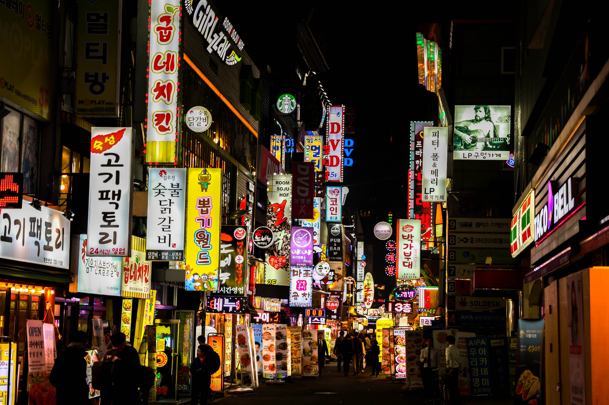
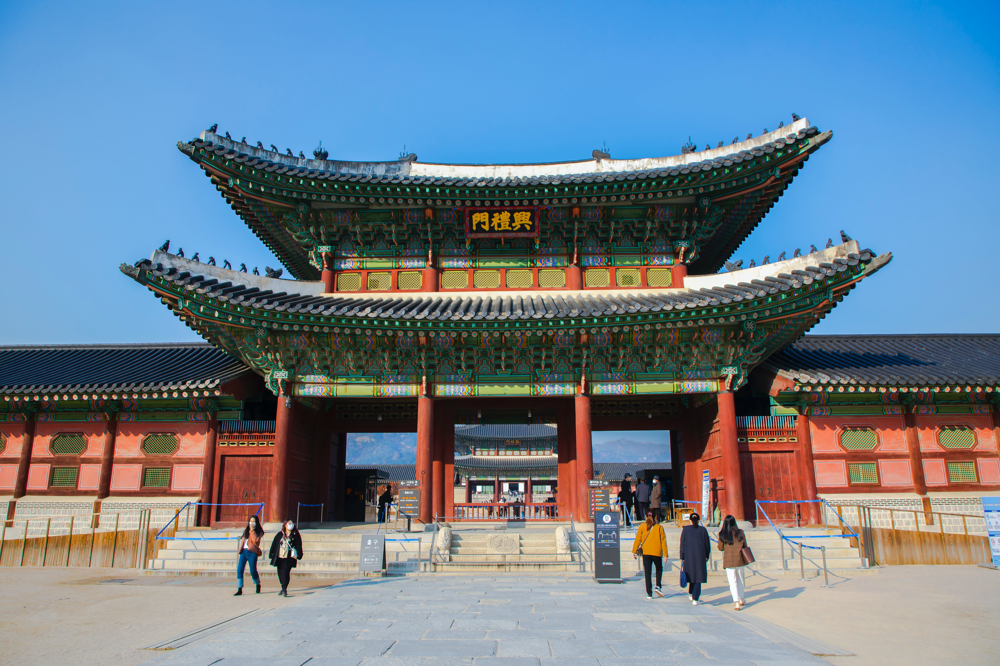
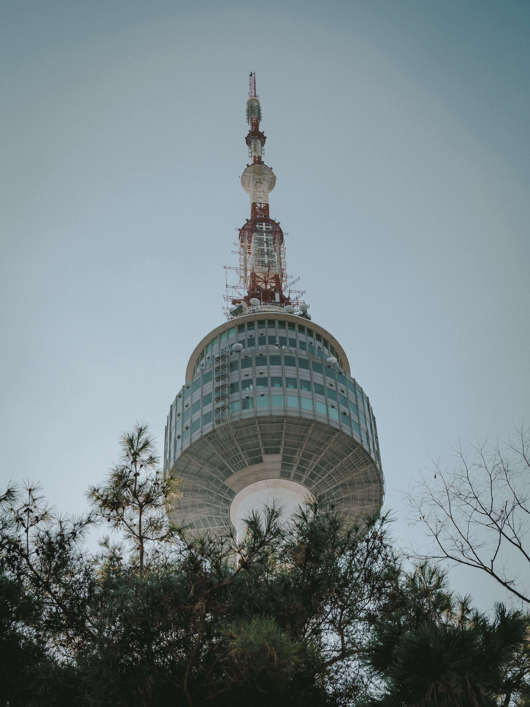

Myeongdong
Myeongdong, a vibrant district nestled in the heart of Seoul, South Korea, is a bustling epicenter of modern culture and commerce.
This dynamic area is celebrated for its blend of high-end fashion boutiques, innovative cosmetics shops, and a diverse array of delectable street food stalls.
The streets come alive with a colorful fusion of local and international trends, attracting both fashion-forward youth and enthusiastic tourists.
Amidst the neon lights and towering buildings, Myeongdong exudes an infectious energy, offering an exciting mix of shopping, dining,
and entertainment, making it a must-visit destination for those seeking the pulse of contemporary Seoul.

Gyeongbokgung Palace
Gyeongbokgung Palace, nestled in the heart of Seoul, South Korea, stands as a revered historical gem.
Constructed in 1395, this grand structure served as the primary royal residence during the Joseon Dynasty.
The palace boasts an impressive architectural design, characterized by its ornate gates and striking pavilions set against the backdrop of the modern city.
Visitors are captivated by the majesty of the royal halls, expansive courtyards, and meticulously maintained gardens, each echoing centuries of Korean heritage.
The experience is further enriched by the mesmerizing Changing of the Guard ceremony, offering a glimpse into the country's rich cultural traditions.
Gyeongbokgung Palace remains a cherished destination, inviting travelers to step back in time and immerse themselves in the splendor of Korea's regal past.

Seoul Tower
Seoul Tower, a landmark perched atop Namsan Mountain in the heart of South Korea's capital city, offers breathtaking panoramic views of Seoul.
Its iconic structure, visible from various vantage points throughout the city, draws locals and tourists alike to its heights. Visitors can ascend via a scenic cable car or a leisurely hike to reach the tower's observation decks, which provide an unmatched vista of the sprawling urban landscape. The tower, aglow with colorful lights in the evening, stands as a symbol of Seoul's modernity and offers an unforgettable experience, whether during the day to appreciate the city's vastness or at night, when the skyline shimmers under the night sky.